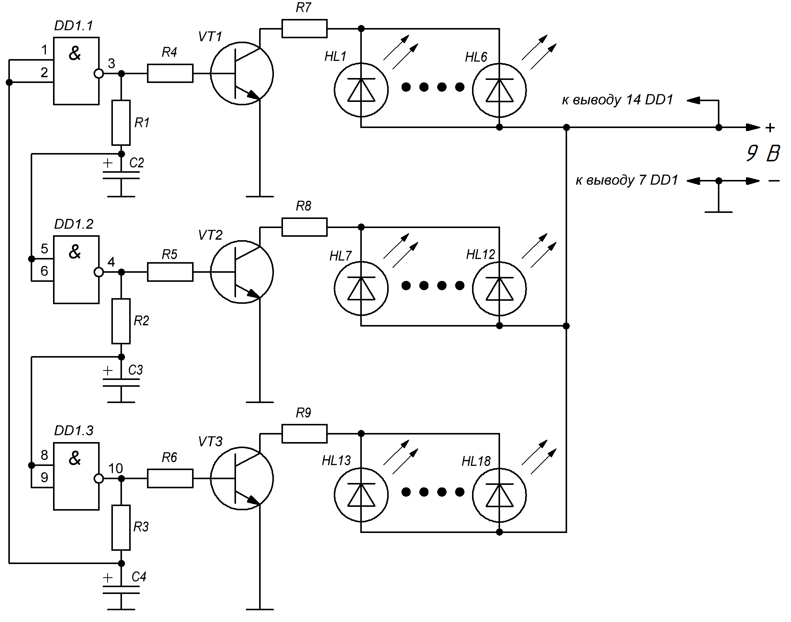
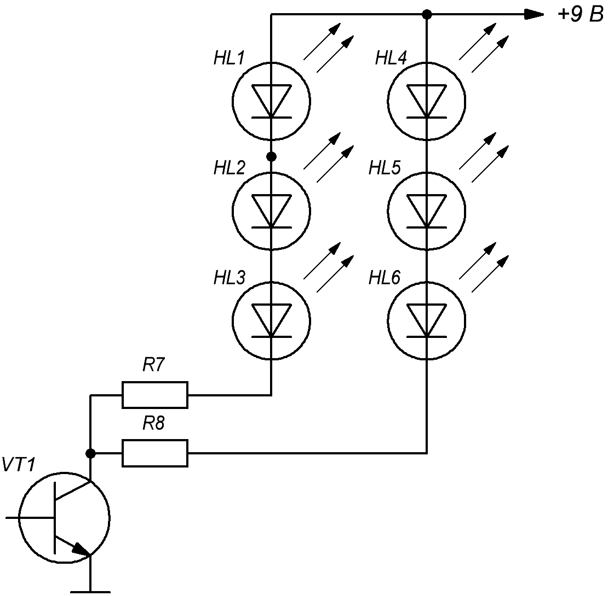

Автомат световых эффектов "Солнышко"
Автомата световых эффектов "Солнышко" (рис. 1) создает эффект огней бегущих из центра к краям солнышка.

Таблица 1
| Обозначение | Наименование | Номинал | Количество | Примечание |
|---|---|---|---|---|
| C1-C3 | Конденсатор электролитический | 10,0 мкФ×16 В | 3 | |
| DA1 | Микросхема | К561ЛА7 | 1 | К561ЛЕ5, CD4011 |
| HL1-HL18 | Светодиод | АЛ307 | 18 | |
| R1-R6 | Резистор постоянный | 10 кОм/0,25 Вт | 6 | |
| R7-R9 | Резистор постоянный | 51 Ом/0,25 Вт | 3 | |
| VT1-VT3 | Биполярный транзистор | КТ315 | 3 | КТ315(А-Г), КТ3102 |
Для подстройки частоты переключения светодиодов необходимо изменить номиналы резисторов R1-R3 или конденсаторов C1-C3. Например, если увеличить R1-R3 вдвое (20 кОм), частота уменьшится вдвое.
Номиналы резисторов R7-R9 зависят от напряжения питания (3...12 В) и от применяемых светодиодов. При сопротивлении 51 Ом и напряжении питания 9 В ток через светодиоды будет чуть меньше 20 мА. Если нужна экономичность устройства и используются светодиоды яркого свечения при малом токе, то сопротивление резисторов можно существенно увеличить (до 200 Ом и больше).
При питании от напряжения 9 В можно использовать последовательное соединение светодиодов: три последовательно соединенных светодиода подключаются к коллектору через резистор сопротивлением 470 Ом (рис. 2).
